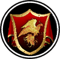

|

|
>> Содержание / Список кланов /
 LastLegion LastLegion
Мир рушился и мы смотрели как оседает пыль от гибнущей мечты. Смотрели, как пылают города, наша гордость, наше имя тонет в потоках алой, праведной крови учителей. Прошлое скрылось в сумраках руин, и теперь за будущее должен был бороться каждый. Многие пытались объединиться, чтобы вместе противостоять происходящему, но увы, такие чувства и качества, как понимание, доверие, любовь и вера были забыты и потеряны навсегда… Эти попытки не увенчались успехом... Мир погибал, замирая в одиночестве, как звезда на небе… Конец был близок и ничто не могло повернуть время вспять...
В последний миг, когда мир уже казалось весь погрузился в хаос, нашлись люди, устоявшие в бою, не склонившие головы и не утратившие способность чувствовать… Люди, проклявшие все прошлые законы, но сильные духом и сохранившие веру… Мы решили объединиться, чтобы противостоять отчуждению и безразличию, чтобы вернуть людям в этот мир веру. Мы объединились в последний раз, в Последний Легион.
Люди, вступившие в Последний Легион, не верили в чужие идолы, но были преданы своему сердцу. Мы не терпели предательства, но смертью карали недоверие к ближнему. Благодаря этому мы победили в последнем бою, отвоевали свое право на жизнь, право на Последний Легион.
В тот момент знания Легиона слились воедино и новорожденным их знаний стал Устав. Устав простых законов жизни, продиктованных не богами, а душой каждого Легионера.
Последний Легион - дисциплинированный отряд бойцов, в котором каждый может довериться стоящему рядом и отдать за него же жизнь. В Легионе только элитные бойцы, те, кто понимают смысл и цену войны, ценят момент жизни и смерти. Им открыта истина пути воина. Каждая война – это поражение. Поражение для того, кто не смог остановиться, кто оказался слишком слаб, чтобы протянуть руку падающему. Мы кладем в чашу щепотку ненависти, но так, чтобы никто не почувствовал её вкуса. Пусть она будет в крови, но ведь это всего лишь щепотка. Мы не варвары. Мы – Последний Легион. Наше знамя – это больше, чем просто клочок ткани. Это больше, чем марш ветеранов. Это душа, которую можно увидеть. Мы обращаемся к каждому из вас! К каждому, у кого есть сердце! Мы поднимаем знамя Легиона. Мы оголяем свою душу перед Вами. Нам нечего стыдиться. Мы всегда были верны своему слову, всегда стояли за своих и не били в спину. Мы сверкаем подобно нашим доспехам в лучах восходящего солнца. Нам не нужно убивать Тьму, чтобы Свет удовлетворил свои амбиции. Мы не служим Тьме и даже не бьемся за Равновесие. Наш путь – это путь вечного совершенствования, совершенствования не ради плевков на тело врага, а ради себя, ради души, во славу Легиона.
Мы ждем каждого, но не иди в Легион за славой воина или за златом. Мы не даем рабов и не делаем идолов. Это всё лишнее для Легионера. Каждый из нас – вселенная, которая развивается, становится лучше, чище. Быть среди нас – это честь. Именно потому, что мы чуть-чуть иные. Смейтесь! Расскажите нам о пафосе наших слов! Смейтесь! Ну что же Вы?! Здесь будет крепость. Никто не держит кровью или мечтами. Это наш выбор. Что-то связывает нас, что-то позволяет идти вперед держа строй и не падая под ударами судьбы - это узы Последнего Легиона
Клятва Последнему Легиону
Я честью своею клянусь перед вами,
Служить Легиону всегда и везде.
Нести идеалы души, не жалея,
Крови своей на битвах холсте.
Забуду я прошлую веру и славу,
Забуду в боях я свои имена.
Я - призрак, и мне неизвестность по нраву,
И слух мне ласкает лишь тишина.
И пусть я не вечен, как звёзды на небе,
Но вечен во времени будет наш клан.
Готов с вами жить на воде и на хлебе,
Но на своём! А не тот, что нам дан.
Эхо зазвучало в моей голове, эхо Легиона,
Я стоял тогда на колене, присягая своему Легиону...
Официальный сайт клана: http://www.legionclan.ru
|
 |
|